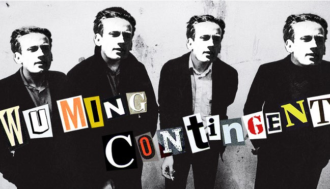

Questo progetto si propone di indagare, attraverso i testi delle canzoni del Wu
Ming Contingent, i motivi che legano questi all’extratesto storico-sociale e
valorizzare i rapporti tra di essi.
I testi di queste canzoni si prestano bene a
un tipo di operazione simile in quanto l'origine della loro composizione trae linfa da
motivazioni di tipo socio-culturali: nel caso del primo album la volontà era stata,
infatti, quella di esplorare dieci figure importanti per la storia dell'ultimo secolo
e che, ognuna a modo loro, abbiano saputo interpretare gli ideali di libertà e
rivoluzione; per il secondo album il gruppo ha preso le mosse da testimonianze che
documentavano gli orrori della trincea durante la prima guerra mondiale.
Il sito vuole offrire l'intera discografia del gruppo, presentata in ordine
alfabetico, cronologico e seguendo le occasioni che hanno ispirato la composizione dei
suddetti testi (così come dichiarati dalla stessa band nel booklet degli album).
È inoltre offerto un percorso di lettura che ponga in relazione le diverse canzoni
attraverso le citazioni di personaggi, date e luoghi rintracciate nei testi.
Il testo (inquadrato all'interno dell'album di appartenenza attraverso l'immagine
della sua copertina) guarda al booklet presente negli album come fonte principale, il
quale è stato oggetto di lievi modifiche in seguito a una verifica della sua
corrispondenza con la traccia audio: sono stati corretti alcuni aspetti grammaticali,
normalizzati nomi e sigle e disposta in maniera leggermente diversa la veste grafica
delle parti di cui si compongono i brani.
Sono adottati espedienti grafici per
evidenziare persone, date e luoghi citati (riassunti in un sommario comprensivo di
collegamento al controllo d'autorità) e le diverse parti che compongono la struttura
del brano (strofa, ritornello, intro, outro, refrain).
Vengono indicate, anche
attraverso un rimando web, l'occasione ispiratrice del testo e una breve spiegazione
del significato del testo, corredata di immagine significativa. Sono forniti i
collegamenti a diverse risorse esterne.
A corredo è presente la possibilità di
consultare l'immagine digitalizzata del testo, così come si presenta all'interno del
booklet, e di ascoltare l'audio del brano, completandone il significato attraverso
l'unione di musica e parole.
I testi sono stati marcati in XML/TEI (collegando le citazioni intratestuali con il rispettivo documento RDF che fa riferimento ai vari controlli d'autorità), XML/DublinCore e descritti secondo la Music Ontology in un documento RDF. Tutti i file sono resi linkabili nella pagina.
Le persone coinvolte, le fonti dei contenuti, gli aggiornamenti e la licenza del presente progetto si possono consultare nei Credits.